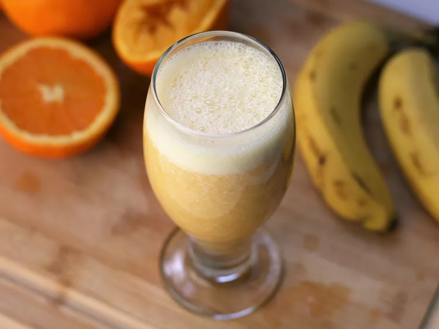

Roasted Asparagus with Parmesan

Delicious Roasted Asparagus with Parmesan
Ingredients
- Olive oil cooking spray
- 1 pound fresh asparagus, tough ends trimmed
- ¼ cup shredded Parmesan cheese
- 1 teaspoon sea salt
- ¼ teaspoon garlic powder, or to taste
Steps
- Preheat oven to 400 degrees F (200 degrees C)
- Spray the inside of a 9x13 casserole dish with olive oil cooking spray. Place asparagus in the dish and lightly spray spears with cooking spray
- Sprinkle asparagus with Parmesan cheese, sea salt, and garlic powder
- Roast in preheated oven until fork easily punctures thickest part of stem, about 12 minutes
Glazed Carrots

Delicious Glazed Carrots
Ingredients
- Carrots: Look for firm, plump, bright, and smooth carrots
- Butter: You'll need about ¼ cup butter to make these caramelized carrots
- Brown sugar: You can use light or dark brown sugar
- Seasonings: These glazed carrots are simply seasoned with salt and ground white pepper
Steps
- Cook the carrots: Place the peeled and cut carrots in a saucepan, cover with water, and bring to a boil. Reduce the heat and simmer until the carrots are tender. Drain.
- Glaze the carrots: Melt the butter in a saucepan, then add the sugar, salt, and pepper. Add carrots and toss until well-coated.
Monkey Juice

Delicious Glass of Monkey Juice
Ingredients
- 8 ounces freshly-squeezed orange juice
- 1 medium banana, peeled and quartered